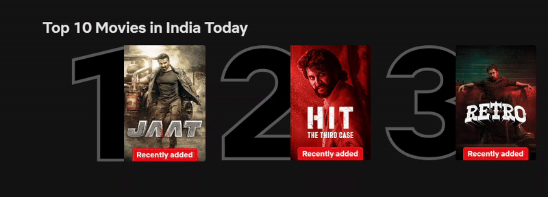

Top 10 TV Shows in India
What is the feature about?
Imagine watching or recommending a show that has been watched and loved by most of the people in your nation. Rather than scrolling the IDMB ratings of each movie, you get a list of Top 10 movies in India. To actually know it better we understand its not just a list but a gateway to keep people hooked by showing what's trending without endless searching.
Why this matters?
This feature is Netflix's way of shouting "Look here what India's watching rightnow!" . It basically ranks movies and series based on what most of the users are streaming, how long do they watch and what do they actually search for? Series like Strangers Things would naturally climb the charts during their final season. By showing these trending shows, Netflix makes it easy for users to flow into popular content,sticking them to the screen. This feature promotes both new releases and hidden gems, maximizing the value of Netflix's content library.
Actors behind the scenes
The feature is backboned by Max-Heap, a data structure that keeps most popular shows at the top, ready to be displayed at the homepage. Consider the parent node "Jaat" with a score of 98 is always more popular than Retro of score 90. We calculate popularity score for each show combining view counts, watch time, and searches then adds it into the heap. When its time to display the top 10 , it just grabs the top nodes quickly.
Visualization (Models and Figures)
This tree keeps Jatt at the top because it has the highest score, followed by Hit Case 3 and Retro. The heap ensures we can quickly pull the top 10 shows, even from thousands of titles. The data flows like this: user views and searches feed into a scoring system, the heap ranks them, and Redis serves the list to the homepage via an API.

Efficiency Analysis
The Max-Heap is a speed demon for this job. Building the heap for, say, 10,000 shows takes O(n log n) time, where n is the number of shows. Adding or updating a show’s score? That’s O(log n). Grabbing the top 10? Just O(10 log n), which is blazing fast. Removing a show (say, if it’s no longer trending) is also O(log n). For space, we need O(n) to store the heap and a dictionary to track shows, which is manageable even for Netflix’s massive catalog.
Caching the top-10 list in Redis drops the query time to O(1), perfect for India’s mobile first users who expect instant results.
The trade-off is updating the heap frequently enough to stay current without overloading the system hourly updates strike a good balance.
Alternative Data Structures to Max-Heap
For this case, we’re using a Max-Heap to keep the top 10 shows at our fingertips, but what if Max-Heap wasn’t an option? Let’s explore four other data structures that could do the job: Sorted Array, Binary Search Tree (BST), Priority Queue (non-heap), and Sorted Linked List, along with why Max-Heap still comes out on top.
1) Sorted Array
Description: Store shows in an array sorted by popularity score, highest first.
Complexity: Insertion/Update: O(n log n) due to sorting; Get Top-10: O(1); Space: O(n).
Drawback: Sorting after every update is slow for Netflix’s frequent data changes.
2) Binary Search Tree
Description: Store shows in a BST, ordered by score, with in-order traversal for top 10.
Complexity: Insertion/Update: O(log n) average, O(n) worst; Get Top-10: O(n); Space: O(n).
Drawback: Unbalanced BSTs can degrade to O(n), and top-10 extraction is slower than heap.
3) Priority Queue (Non-Heap, e.g., List-Based):
Description: Use a list as a priority queue, maintaining order manually.
Complexity: Insertion/Update: O(n log n); Get Top-10: O(1); Space: O(n).
Drawback: Similar to Sorted Array, sorting on every update is inefficient.
4) Sorted Linked List:
Description: Store shows in a linked list, sorted by score.
Complexity: Insertion/Update: O(n); Get Top-10: O(1); Space: O(n).
Drawback: Linear insertion time is too slow for frequent updates.
Why Max-Heap is better?
-> Efficiency: Max-Heap offers O(log n) for insertions and updates, faster than Sorted Array/ListPQueue (O(n log n)) and Sorted Linked List (O(n)). BST can match O(log n) but risks O(n) if unbalanced.
->Top-10 Extraction: Max-Heap’s O(10 log n) is faster than BST’s O(n) in-order traversal, while Sorted Array/ListPQueue match O(1) for extraction but lose on updates.
->Simplicity: Max-Heap is easier to maintain than BST (no balancing needed) and more efficient than Linked List for Netflix’s frequent updates.
->Scalability: Combined with Redis caching, Max-Heap supports Netflix’s large-scale, real-time needs, unlike the slower alternatives.
Learnings
The Max-Heap’s fast updates (O(log n)) keep the top-10 list accurate, so users trust Netflix to show what’s truly trending, like Stranger Things’s latest episode. Highlighting local favorites (Hit,Pushpa) taps into India’s 750 million TV viewers, boosting subscriptions. Redis caching makes the list load instantly, crucial for India’s mobile users who make up 80% of Netflix’s traffic. The heap handles thousands of shows efficiently, ready for Netflix’s growing Indian catalog, including originals like Sacred Games. Dynamic updates to the heap allow Netflix to adapt to shifting trends (e.g., reality shows gaining popularity), maintaining engagement during peak viewing times.